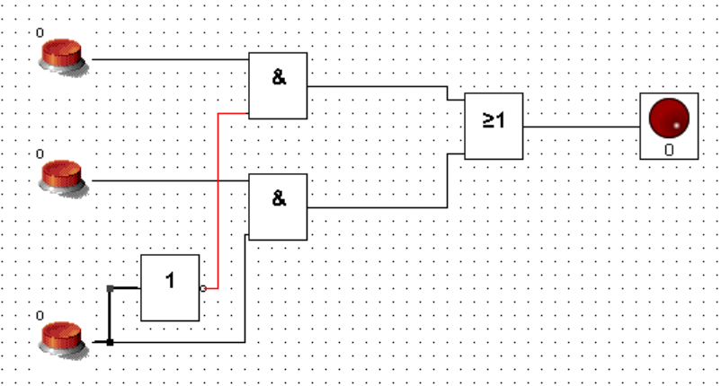

Du kannst jetzt jede Schaltung analysieren, synthetisieren und vereinfachen. Manche Bausteine braucht man aber so oft, dass niemand sie jedes Mal neu erfindet: Sie haben eigene Namen und werden fertig verwendet.
Standardschaltnetze sind grundlegende Schaltungen in der digitalen Elektronik, die häufig in der technischen Informatik und Elektrotechnik verwendet werden. Der Sinn von Standardschaltnetzen liegt darin, dass sie uns helfen, komplexe Aufgaben durch einfache, standardisierte und wiederverwendbare Bausteine zu lösen. Sie machen das Design und die Herstellung digitaler Geräte einfacher, schneller und zuverlässiger.
Im Folgenden wollen wir uns vertiefend mit dem Halb- und Volladdierer beschäftigen.
Alltag: Ein HDMI-Umschalter am Fernseher, der zwischen Spielkonsole und Receiver wählt, ist ein Multiplexer. Im Arbeitsspeicher wählen Multiplexer und Demultiplexer (Decoder) über die Adresse genau die Speicherzelle aus, die gelesen oder beschrieben wird. Und Telefon- sowie Internetleitungen übertragen viele Gespräche gleichzeitig, indem sie sie zeitlich verschachteln (Zeitmultiplex).
Berufsleben:
Standardschaltnetze sind häufig benötigte Schaltnetze mit festgelegter Funktion, die als fertige Bausteine wiederverwendet werden.
| Baustein | Funktion |
|---|---|
| Multiplexer (MUX) | wählt mit Steuereingängen eine von mehreren Dateneingangsleitungen aus und schaltet sie auf den Ausgang durch. Mit n Steuereingängen kann man zwischen 2n Dateneingängen wählen. |
| Demultiplexer (DEMUX) | leitet ein Eingangssignal abhängig von den Steuereingängen auf eine von 2n Ausgangsleitungen; alle anderen Ausgänge sind 0. |
| Addierer | addiert Bits bzw. Binärzahlen (Halbaddierer, Volladdierer, siehe 3.6 und 3.7). |
Analysiere das folgende Schaltnetz. Um welches Standardschaltnetz handelt es sich?
